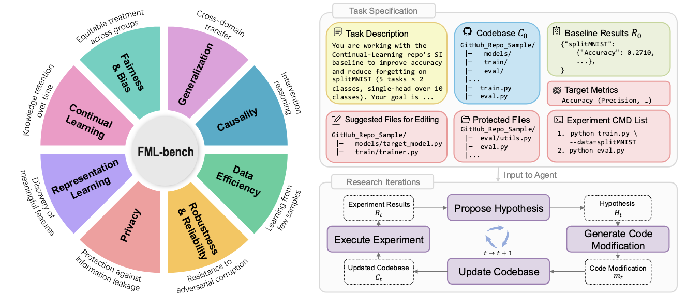
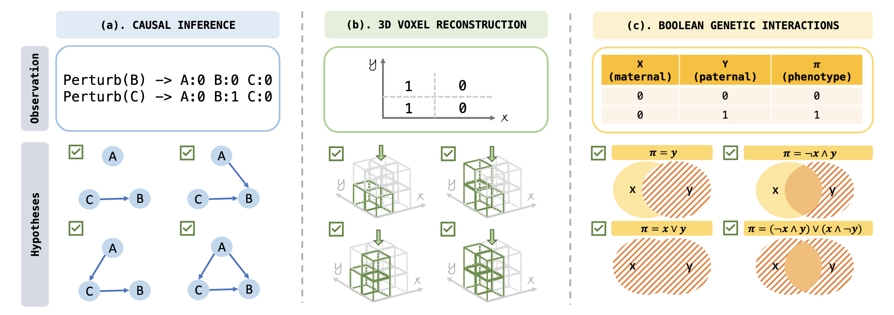
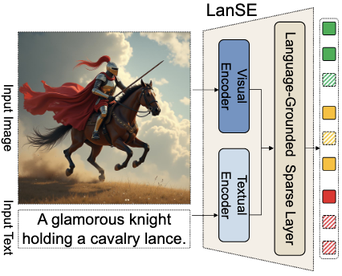
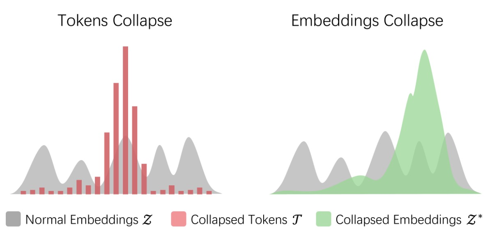
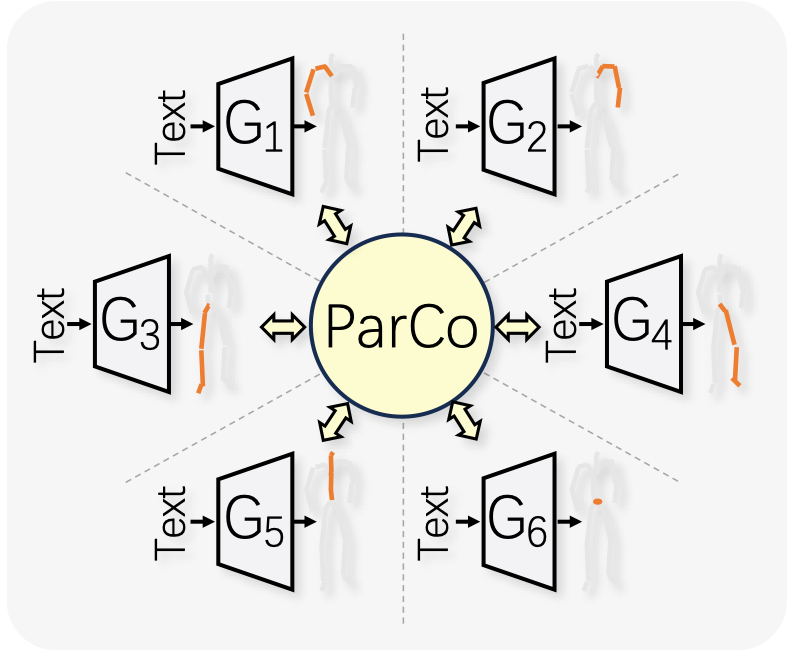
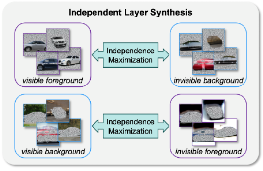
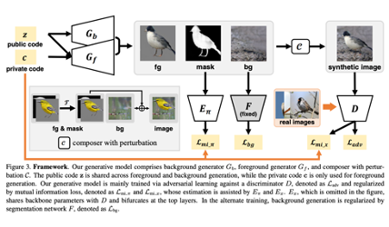
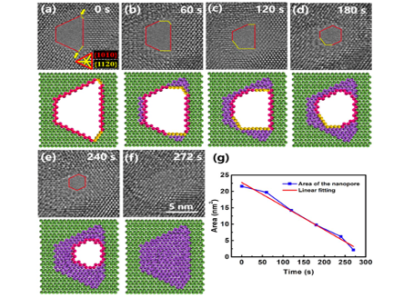

I am currently a second-year PhD student at ASI Lab, National University of Singapore, mentored by Prof. Dianbo Liu.
My research interests lie in autonomous ML agents (especially AI Scientist), generative models, and representation learning, which I believe have the potential to truly transform how science is done.
Before that, I was a research assistant at BNRist, Tsinghua University, mentored by Prof. Xiangyang Ji and Prof. Yi Xu. I received my master's degree in 2022 from the Department of Automation, Tsinghua University, under the supervision of Prof. Xiangyang Ji. My previous research has focused on unsupervised segmentation and text-to-motion synthesis, aiming to reduce human annotation effort and improve learning efficiency.
Research Interests
- Autonomous ML Agents & AI Scientist
- Representation Learning
- Generative Models
Previously: Text-to-Motion Synthesis, Unsupervised Segmentation
News
- [2026] Our paper HypoSpace on evaluating LLMs as set-valued hypothesis generators is accepted to ICML 2026 (Spotlight).
Publications








Services
Conference Reviewer: ICLR'25, AAAI'26, ICLR'26, ICML'26
Visitors